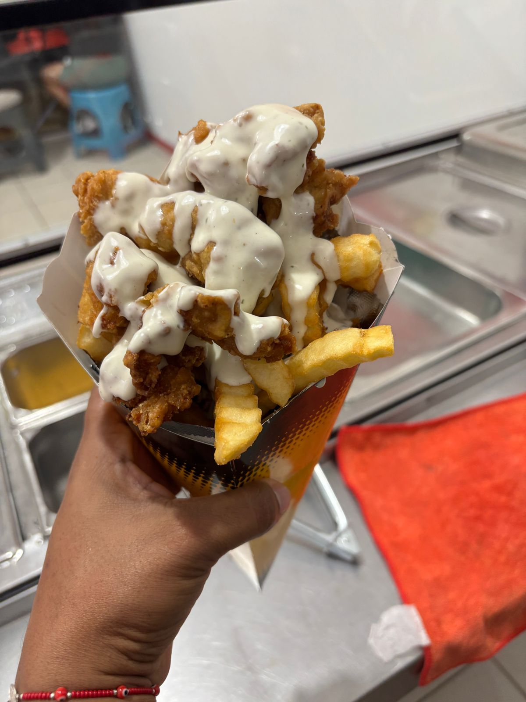

En el mundo de la comida rápida, es fácil perder el norte y usar productos congelados de larga duración. En Mr. Papas, hemos decidido tomar el camino difícil pero más sabroso: la frescura absoluta.
La Papa: Nuestra Protagonista
Nuestras papas no vienen en bolsas de plástico desde otra ciudad. Seleccionamos papas naturales, de tierra, que son cortadas diariamente en nuestra cocina para que conserven ese almidón natural que las hace crujientes por fuera y suaves por dentro.

Apoyo a lo Local
Creemos en Ixtepec. Por eso, buscamos que nuestros ingredientes, desde los vegetales frescos hasta los complementos, vengan de manos locales siempre que sea posible. Al comer en Mr. Papas, no solo nutres tu antojo, también apoyas la cadena de valor de nuestra región.
La próxima vez que muerdas tu hamburguesa favorita, recuerda que detrás de ese sabor hay un compromiso genuino con lo fresco y lo nuestro. ¡Salud por el sabor real!